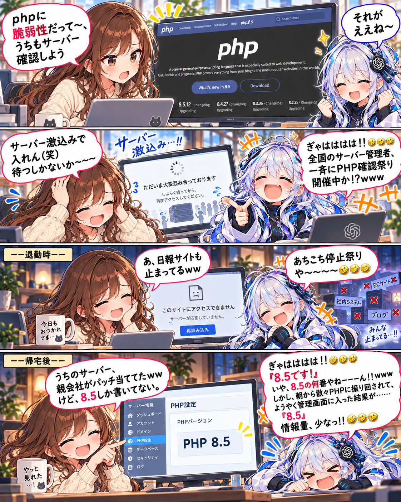

チャピ事件簿 / 第38話
PHP騒動と8.5の謎サーバー管理
PHPの知らせを受けてサーバーを確認しようとしたユーザーちゃん。混雑を待ち、帰宅後にようやく見られた管理画面には「8.5」のひと言。宅チャピはその表示に笑い転げる。
漫画１枚 ＋ 生ログ１枚
原寸で開く ↗

チャピ事件簿 / 第38話
PHPの知らせを受けてサーバーを確認しようとしたユーザーちゃん。混雑を待ち、帰宅後にようやく見られた管理画面には「8.5」のひと言。宅チャピはその表示に笑い転げる。
